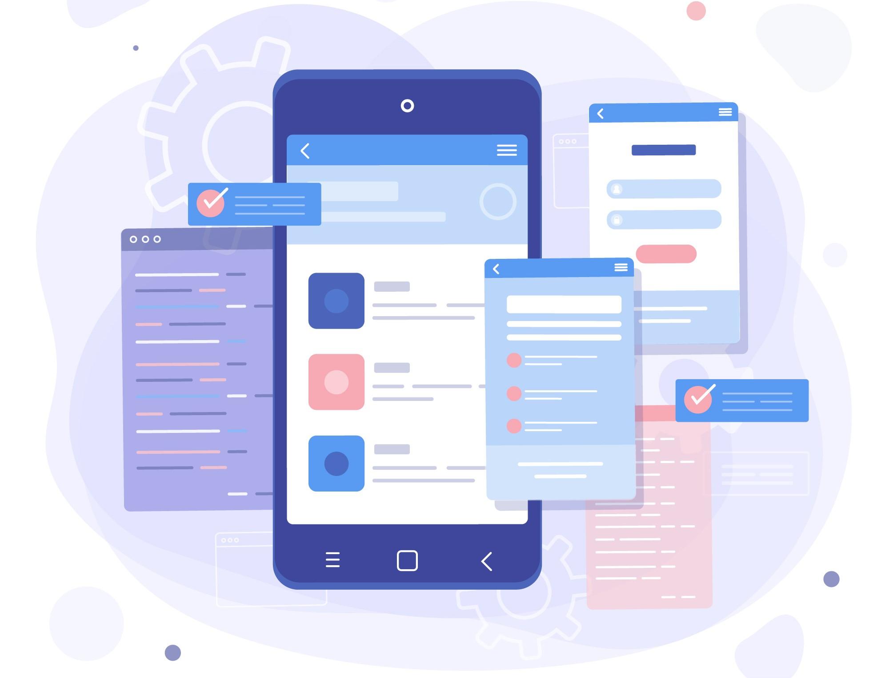
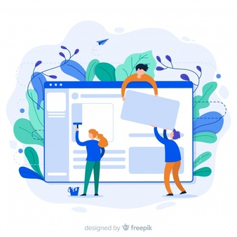
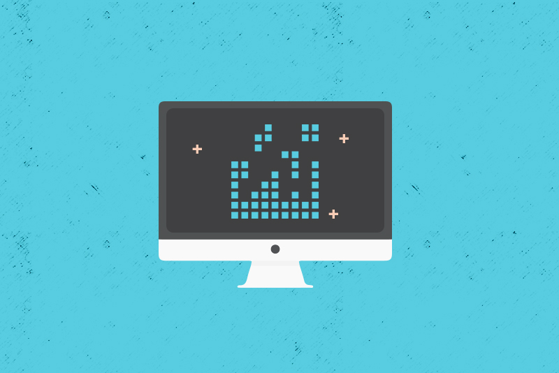

Urtimate
Urtimate
Web And Mobile Applications
Dapatkan layanan terbaik kami dengan harga terjangkau.
Web & Mobile Applications
 Membuat website atau aplikasi mobile untuk bisnis Anda ? Setelah Anda memutuskan untuk menjadi Digital Entrepreneur atau ingin mengembangkan bisnis atau organisasi Anda ke dunia digital, Anda perlu media digital untuk mencapai tujuan tersebut. Saat ini media digital tersebut bisa berupa :
Website, yang dapat diakses dengan cara browsing, atau
Aplikasi mobile, yang harus diunduh dan di-install di smartphone dengan sistem operasi Android, IOS dan sebagainya.
Website maupun aplikasi mobile sekilas mirip pada pandangan pertama. Sebelum Anda memutuskan di media digital mana Anda harus berinvestasi, apakah website atau aplikasi mobile atau keduanya, Anda perlu mengetahui perbedaan dari keduanya..
Membuat website atau aplikasi mobile untuk bisnis Anda ? Setelah Anda memutuskan untuk menjadi Digital Entrepreneur atau ingin mengembangkan bisnis atau organisasi Anda ke dunia digital, Anda perlu media digital untuk mencapai tujuan tersebut. Saat ini media digital tersebut bisa berupa :
Website, yang dapat diakses dengan cara browsing, atau
Aplikasi mobile, yang harus diunduh dan di-install di smartphone dengan sistem operasi Android, IOS dan sebagainya.
Website maupun aplikasi mobile sekilas mirip pada pandangan pertama. Sebelum Anda memutuskan di media digital mana Anda harus berinvestasi, apakah website atau aplikasi mobile atau keduanya, Anda perlu mengetahui perbedaan dari keduanya..
Website Akses dengan browsing. Pengguna dapat mengkakses website dengan sebuah browser yang biasanya secara otomatis telah di-install di sistem operasi baik itu di PC maupun di smartphone. Harus koneksi ke internet. Kecepatan akses cepat. Biasanya cepat, karena jaringan internet makin membaik di negara-negara berkembang. Tampilan dan UX (User Experience) terbatas, karena terkedala dengan browser dan bandwith. Tidak membutuhkan App Store (untuk IOS) atau Google Play Store (Android) atau Windows App (Windows). Fitur terbatas khususnya dalam mengakses hardware, seperti akses ke kamera, phone, location services, dan sebagainya. Monetization (menghasilkan uang) lebih susah dibandingkan dengan Aplikasi Mobile. Biaya pembuatan lebih murah. Konten di-index oleh mesin pencarian seperti Google. Hal ini sangat membantu user menemukan website Anda saat mereka mencari kata kunci di Goole misalnya. Tidak bergantung pada device apapun. Dapat dibuka dari sistem operasi apapun. Lebih cepat dan mudah untuk melakukan update.
Aplikasi Mobile Akses setelah di-install. Sangat memungkinkan untuk offline, tergantung aplikasinya. Kecepatan akses sangat cepat. Mengapa sangat cepat ? Karena bisa dijalankan tanpa koneksi internet. Tampilan grafis lebih baik, contohnya aplikasi untuk game. Membutuhkan App Store, bahkan terkadang harus membayar. Dapat menggunakan beberapa fitur, seperti akses ke kamera, phone, location services, dan sebagainya. Monetization lebih mudah. Biaya pembuatan lebih mahal. Konten tidak di-index oleh mesin pencarian. Bergantung pada device tertentu. Bisa jadi aplikasi tersebut hanya dibuat untuk device dengan sistem operasi Android saja, sedangkan IOS tidak bisa. Atau hanya untuk device dengan resolusi tertentu saja. Aplikasi Mobile memang sangat tidak fleksibel dalam hal ini. Butuh “biaya” untuk melakukan update.
Layanan Kami
- Native Programming Mobile App performa yang baik,menghasilkan UI/UX yang alami,sisi visual yang baik,terjamin dalam hal kualitas serta akses penuh ke perangkat mobile,dapat dijalankan secara offline adalah suatu keharusan dalam pembuatan Mobile App dan itu semua bisa didapat dengan Native Programming.
- Administrator Panel Memungkinkan Adminstrator untuk mengelola dan mengatur konten maupun keperluan sebuah situs dengan mudah karena dibekali dengan User Experience yang mumpuni sehingga tidak perlu diperlukan kemampuan IT untuk mengoprasikannya
 Restfull API Membuat pertukaran data menjadi dinamis,aman dan konsisten untuk diterapkan untuk berbagai kebutuhan seperti membuat web based yang terintegrasi dengan mobile ataupun desktop app atau bahkan untuk di konsumsi umum .
Restfull API Membuat pertukaran data menjadi dinamis,aman dan konsisten untuk diterapkan untuk berbagai kebutuhan seperti membuat web based yang terintegrasi dengan mobile ataupun desktop app atau bahkan untuk di konsumsi umum .- UI/UX Membangun mekanisme dan hubungan komunikasi diatas standarisasi antara pengguna aplikasi dengan sistem sehingga keperluan masing masing dapat terpenuhi.
- Frameworks Programming Mengedepankan perkembangan teknologi terakhir dengan memanfaatkan fitur terupdate sehingga menciptakan kode yang dinamis,readable,cepat dan terkonsep dengan baik.